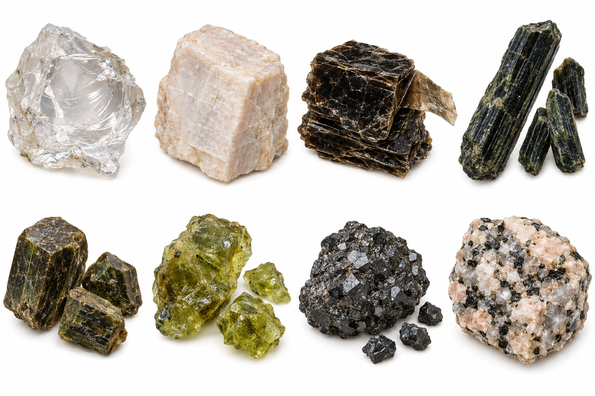
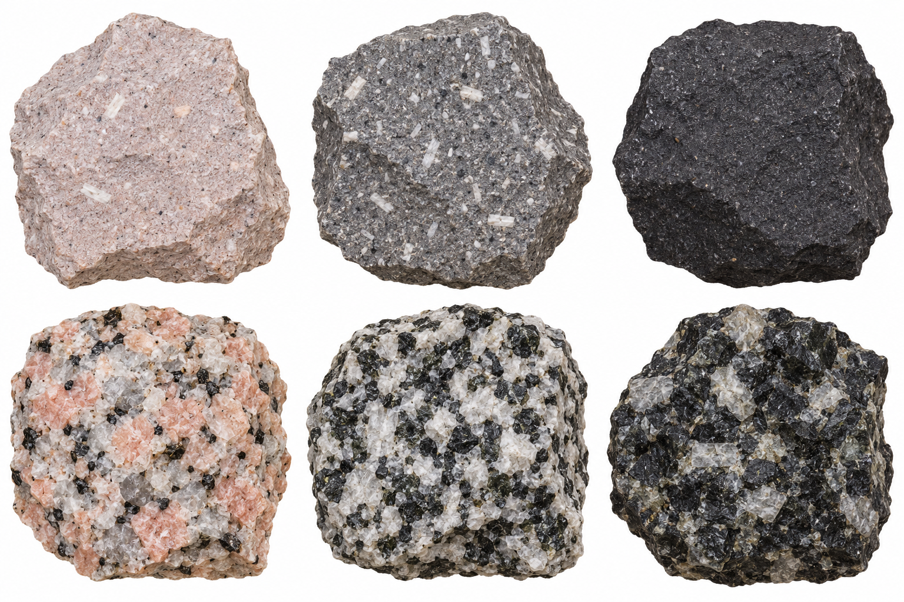
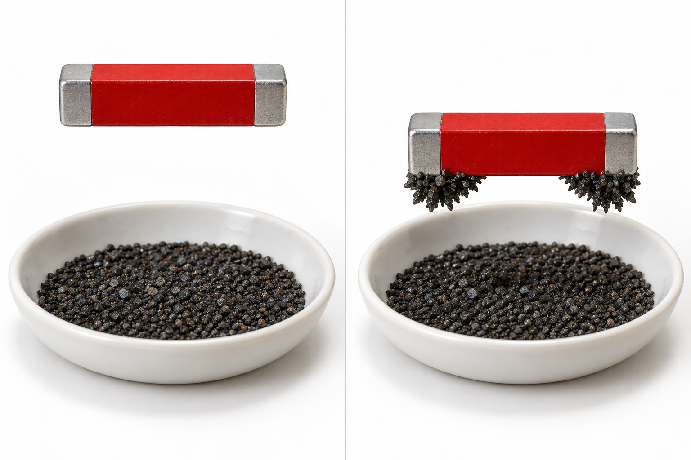

中1 理科｜鉱物
鉱物
中学1年・地学
鉱物
岩石をつくる粒には、
見分ける手がかりがある。

中1 理科｜鉱物
1つの岩石に、違う種類の粒がある
岩石：花こう岩

それをつくる鉱物の例
透明っぽい粒・白っぽい粒・
黒っぽい粒が組み合わさる。
黒っぽい粒が組み合わさる。
岩石をつくる、性質の決まった
天然の物質が 鉱物。
天然の物質が 鉱物。
中1 理科｜鉱物
白っぽい粒は、割れ方で比べる
A 不規則な割れ口
B 平らな面に沿って割れる
Aは 石英。
無色〜白色で、不規則に割れる。
無色〜白色で、不規則に割れる。
Bは 長石。
白色や桃色。柱状・角ばった形に割れる。
白色や桃色。柱状・角ばった形に割れる。
中1 理科｜鉱物
黒い鉱物でも、薄い板にはがれるものがある
黒〜こげ茶色。
光る面が見える。
光る面が見える。
うすい板状に、
何枚もはがれる。
何枚もはがれる。
この特徴をもつのが
黒雲母。
黒雲母。
中1 理科｜鉱物
柱のような鉱物は、形を比べる
細長い柱のような形
短く、太い柱のような形
長い柱状に見える 角閃石。
黒色〜黒緑色。
黒色〜黒緑色。
短い柱状に見える 輝石。
暗い緑色〜褐色、黒色。
暗い緑色〜褐色、黒色。
中1 理科｜鉱物
黄緑色の粒も、火成岩をつくる
黄緑色〜オリーブ色。
粒状で見つかることが多い。
粒状で見つかることが多い。
決まった平らな面ではなく、
不規則に割れる。
不規則に割れる。
この鉱物が かんらん石。
中1 理科｜鉱物
黒い粒は、磁石への反応も手がかり
磁鉄鉱の粒

磁石を近づける
粒が磁石に引きつけられる
黒く、金属のような
光沢を示すものがある。
光沢を示すものがある。
磁石に強く引きつけられる
磁鉄鉱。
磁鉄鉱。
砂鉄には、磁鉄鉱などの
鉱物が含まれる。
鉱物が含まれる。
中1 理科｜鉱物
覚えること｜無色鉱物と有色鉱物
無色鉱物の代表
有色鉱物の代表
無色鉱物：石英・長石。
透明なものだけでなく、白や桃色も。
透明なものだけでなく、白や桃色も。
有色鉱物：黒雲母・角閃石・輝石・
かんらん石・磁鉄鉱など。
かんらん石・磁鉄鉱など。
中1 理科｜鉱物
岩石全体の色は、含まれる鉱物で変わる
白っぽい鉱物が多い花こう岩
黒っぽい鉱物が多い斑れい岩
無色鉱物の割合が大きいと、
岩石全体も白っぽく見えやすい。
岩石全体も白っぽく見えやすい。
有色鉱物の割合が大きいと、
岩石全体も黒っぽく見えやすい。
岩石全体も黒っぽく見えやすい。
中1 理科｜鉱物
図の読み方｜同じ量の中で割合を比べる
A 無色鉱物が80％
無色 80％ ／ 有色 20％
B 無色鉱物が30％
無色 30％ ／ 有色 70％
凡例：白＝無色鉱物、黒＝有色鉱物。読み取り用の仮想例で、特定の岩石の実測値ではない。
黒っぽく見えやすいのは B。
有色鉱物の占める割合が大きいから。
中1 理科｜鉱物
色だけで決めず、もう1つの特徴を見る
A 白っぽく、不規則に割れる
B 黒っぽく、薄い板にはがれる
Aは 石英。
長石との違いは割れ方。
長石との違いは割れ方。
Bは 黒雲母。
磁鉄鉱との違いは薄い板状のはがれ方。
磁鉄鉱との違いは薄い板状のはがれ方。
中1 理科｜鉱物
覚えること｜7種類の見分ける手がかり
無色〜白色／不規則に割れる
石英
白・桃色／平らな面に沿って割れる
長石
黒〜褐色／薄い板状にはがれる
黒雲母
長い柱状／短い柱状を手がかりに
角閃石・輝石
黄緑色／不規則に割れる
かんらん石
黒色／磁石に強く引きつけられる
磁鉄鉱
中1 理科｜鉱物
岩石の「でき方」と「材料」がつながった
見るところ分かること具体例
粒の大きさ・組織冷えた過程斑状組織／等粒状組織
粒の種類・割合岩石の材料石英・長石・黒雲母など
次の単元は「地震」。地下の岩石がどのように動くかを考える。